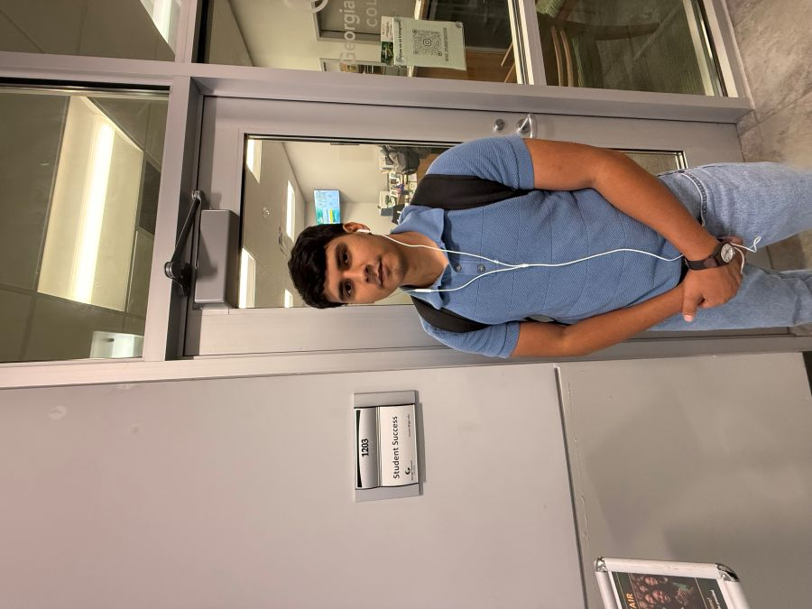

Motivated Software Development student seeking an entry-level position where I can apply
my programming, problem-solving, and software development skills in a professional environment.
Interested in building reliable and user-friendly applications, with a particular interest
in the gaming and financial technology industries. Eager to learn new technologies, collaborate with
experienced teams, and contribute to projects while continuing to grow as a software developer.
| Company | Position | Duration | |
|---|---|---|---|
| Handshake — Project Hedgehog | AI Training Specialist | July 2026 – Present | |
| My Carpenter | Deck Construction Worker | March 2025 - Present | |
| Taco Mac | Waiter's assistant | December 2023 - March 2025 | |
| My Tools | Warehouse Coordinator | March 2020 – January 2021 |